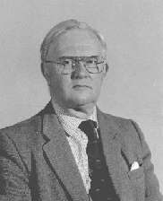

It's with great sadness that I must report that John Gilks, a past Chairman of the FRMS, passed away in February 2020 at the age of 87. John was a local government officer by profession and also a noted railway photographer and author but music was a great passion in his life. He inherited from his father a love of record collecting and amassed a vast collection of 78rpm records, LPs and CDs in a wide range of musical genres; it would not be unusual in one of his record playing sessions to hear a requiem mass closely followed by Reginald Dixon at the Blackpool Tower organ.
When John moved from London to live in North Yorkshire in the early 1980s he joined the York society. For more than twenty years he hosted Sunday afternoon meetings for York RMS members at his home, complete with a sumptuous tea of sandwiches and cakes.
John became a member of the FRMS committee in 1992, Vice Chairman in 1997 and was the Federation's Chairman from 1998 to 2000. He was also Chairman of the Scarborough society for a while. During his tenure at the helm of the Federation it would not be unfair to say that he quite often courted controversy; if John was on a mission he could be fiercely single-minded in its pursuit! He strongly believed that the recorded music society movement was a force for good and was determined to develop and promote it as widely as possible.
Always keen to share the knowledge he'd acquired, John ran weekend courses, under the auspices of the Federation, for many years on the history of recorded sound at a number of adult learning colleges around the country including Grantley Hall in North Yorkshire, Farncombe Estate in the Cotswolds and Madingley Hall, Cambridge. I helped him in the running of the courses and in all the years we did them John's infectious enthusiasm for learning and sharing knowledge about music and recordings never faded.
Sadly, towards the end of his life John suffered with severe dementia, a condition that caused his enjoyment of playing records to diminish and eventually cease. This was a great sadness to friends and acquaintances who had enjoyed visits to his home when John was nearly always able to put his hands on a particular record or piece of music within a few minutes of a request. He is very much missed.
Gavin Mist
Chairman
York RMS